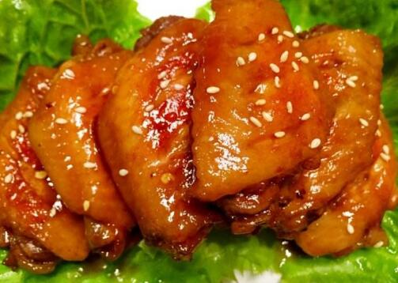
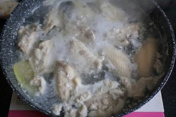
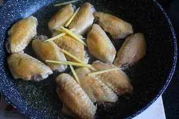
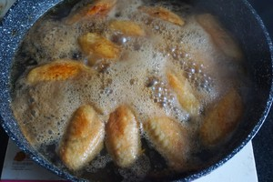
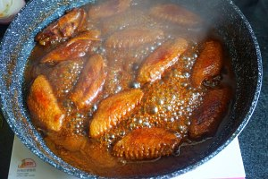
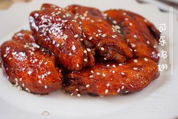

A recipe for cola chicken wings
Coke chicken wings, chicken wings and coke as the main material produced.The flavor is delicious, the color is bright, the chicken wings are tender and smooth, the salty and sweet taste is moderate, but still retains the aroma of cola, the taste is super attractive.

The material prepared
Chicken wings 10, ginger 4 pieces, dark soy sauce 1 spoon, salt amount, cooking wine 1 spoon, light soy sauce 1 spoon, coke 1 bottle
Production steps

Wash chicken wings, cut both sides, add shredded ginger, 1 spoon cooking wine, half spoon dark soy sauce, half spoon light soy sauce and a little salt, marinate for half an hour.

After marinating for half an hour, blanch in the cold water pot.Bring to a boil and drain

Add 1 tablespoon cooking wine, half tablespoon dark soy sauce, half tablespoon light soy sauce and stir fry until the wings are evenly colored.

Pour coke (350ml or so) and bring to a boil, adding a teaspoon of salt.Turn to medium heat and cover to simmer for 15 minutes.

After 15 minutes, remove the lid and transfer to the fire.Stir constantly to avoid burning, and leave a little juice to remove from the heat.

A coke of chicken wings is done!